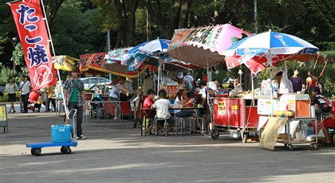
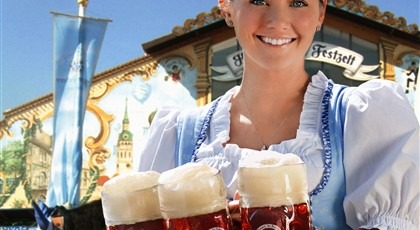
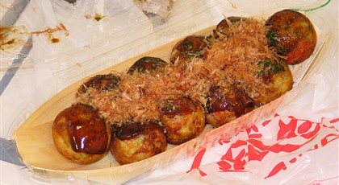
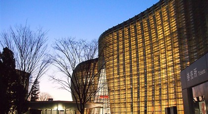

Food & Markets
-
STREET FOOD FAVORITES

Festival days are a great time to try yakisoba, grilled skewers, sweets, and quick snacks from local stalls. Popular food areas can get crowded near evening.
-
INTERNATIONAL FESTIVAL FOOD

International events often feature Brazilian, German, Thai, Indonesian, and other food booths. They are useful places to experience culture through taste, music, and casual conversation.
-
MARKET ETIQUETTE

Keep lines tidy, prepare payment before reaching the front, and use the event's trash sorting area. Small habits help crowded food zones move smoothly.
-
NEARBY CAFES AND BREAKS

For long festival days, mark a nearby cafe, convenience store, or quiet side street before you arrive. It gives you an easy reset when the main area gets packed.